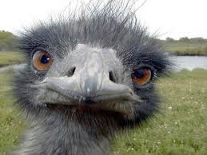

About Me
According to Sally Hogshead’s Fascination Advantage Report Anna is:
The Provocateur: innovative, witty, & unconventional
What makes Anna unique is that she doesn’t just design. As a matter of fact, she can’t, her mind doesn’t work that way. This must be where Hogshead’s “innovative” comes in.
Anna is always asking, what can we do to increase the value, what can elicit a better response, what one step beyond where we are will leave the client feeling overjoyed and appreciated, what is that one unexpected angle. She has discovered along her journey that while design is deeply embedded in her heart, the creative process is where the passion truly lies. This realization has allowed Anna to listen to the whole conversation around design AND marketing strategy.